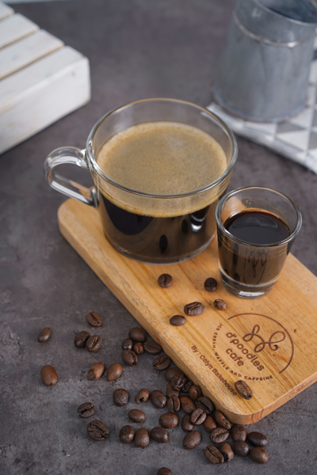
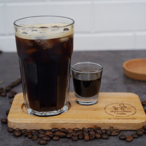
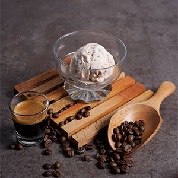
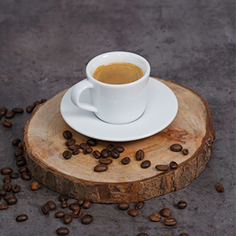
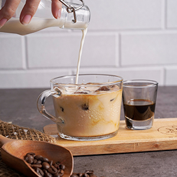

Tentang D'poodles Cafe
Didirikan pada Tahun 2021. D'poodles cafe hadir dengan berbagai varian menu coffe dan buat para pencinta gelato, D'poodles cafe menyediakan dengan berbagai macam rasa dengan rasa unggulan.
D'poodles cafe hadir dengan konsep pet friendly, jadi buat kamu yang mau nongki, kamu bisa ajak anabul kamu sekalian.
PILIHAN MENU TERBAIK UNTUK KAMU
Kopi dapat menentukan & menyesesuaikan mood yang kamu inginkan
D'poodles cafe menyediakan berbagai olahan kopi yang cocok untukmu
mengisi hari serta berbagai pelengkap saat menikmati kopi dan harimu!



